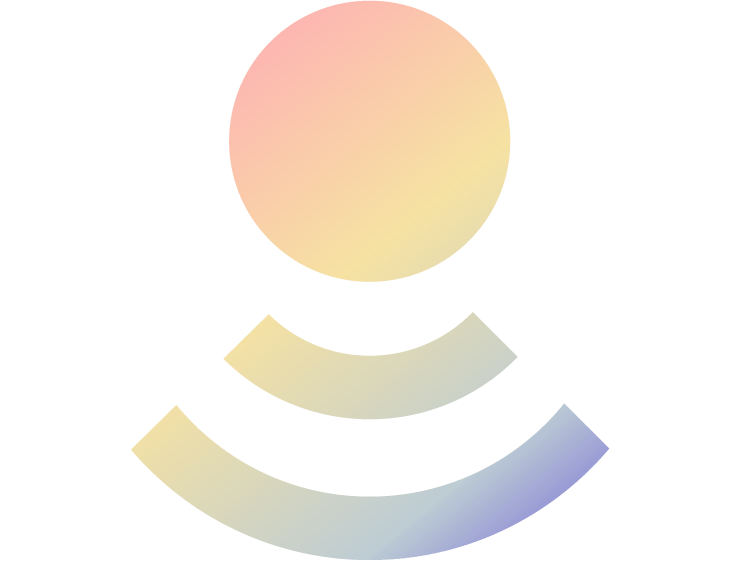

Conferencias
Charlas, entrevistas y participaciones para abrir conversaciones sobre Parkinson, bienestar, comunidad y nuevas formas de atravesar el diagnóstico. Espacios pensados para instituciones, equipos, medios y comunidades que buscan una mirada humana, directa y transformadora.